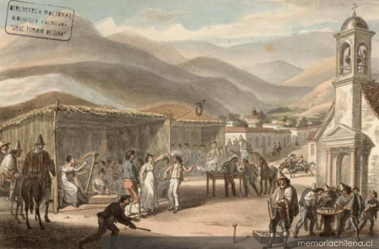
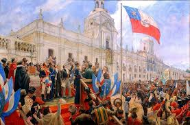
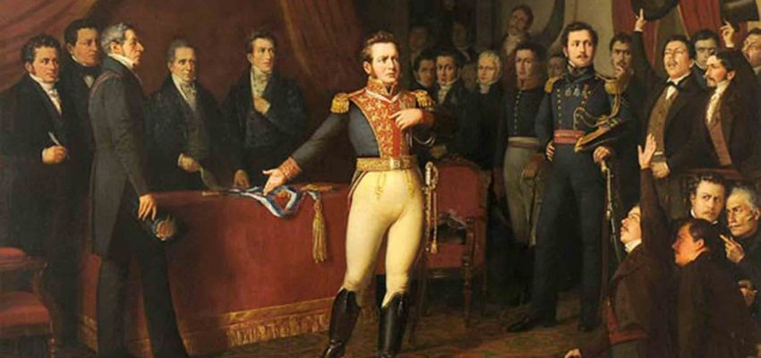

El período colonial de Chile comenzó con la llegada de Pedro de Valdivia en 1541, quien fundó Santiago. Durante esta etapa, los españoles establecieron un sistema de encomiendas y enfrentaron la resistencia de los pueblos indígenas, como los mapuches.
La lucha por la independencia comenzó en 1810 con la Primera Junta de Gobierno. Líderes como Bernardo O'Higgins y José Miguel Carrera jugaron roles clave. La Batalla de Maipú en 1818 consolidó la independencia.
Tras la independencia, Chile se consolidó como república. El siglo XIX vio el desarrollo económico gracias a la minería y el comercio, así como la Guerra del Pacífico (1879-1883), que expandió el territorio chileno.
